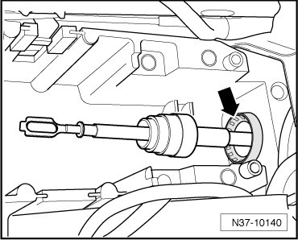
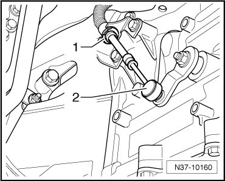
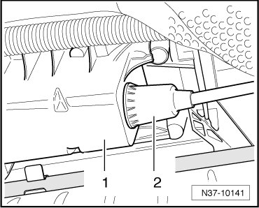

Removal and Replacement
Selector Lever Cable
• Tying a line to the cable before removing it, will make it possible to thread the cable back in when installing.
Removing
- Remove shift mechanism. Refer to --> [ Selector Mechanism ] Selector Mechanism.
- Push boot - arrow - forward and out from the shift unit.

To remove the selector lever cable, the transfer case only needs to be lowered.
- Lower the transfer case.
- Remove locking washer - 1 -.

- Pull selector lever cable - 2 - from lever/selector shaft.
Installing
- Insert selector lever cable into the shift unit - 1 -.

- Seat sleeve - 2 - so that it makes full contact against the shift unit.
- Install the transfer case.
- Carefully press selector lever cable - 2 - onto selector shaft lever. Do not bend lever/selector shaft when doing this, otherwise shifting can no longer be adjusted precisely.
- Replace lock washer - 1 -.
- Seat boot - arrow - so that it makes full contact against the shift unit.
- Install shift mechanism. Refer to --> [ Selector Mechanism ] Selector Mechanism.